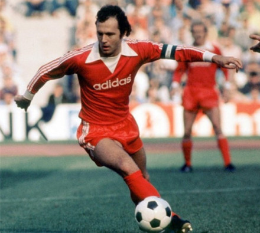
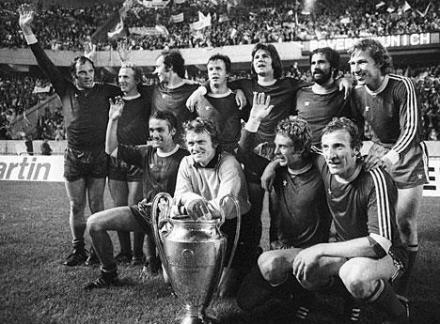
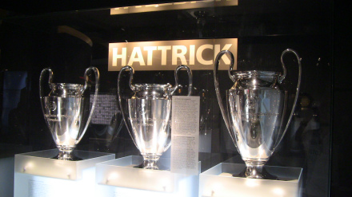
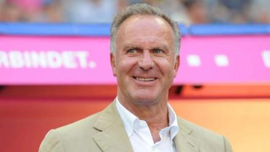
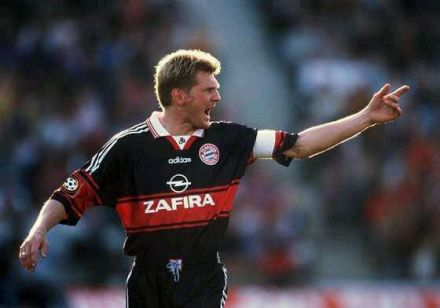
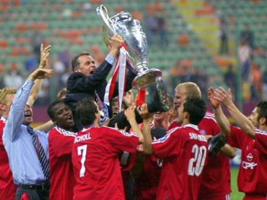
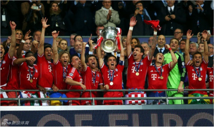
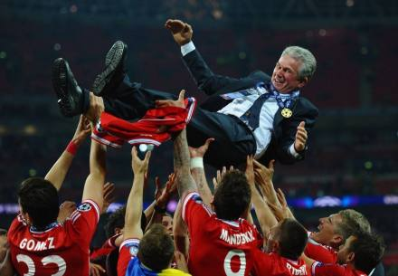
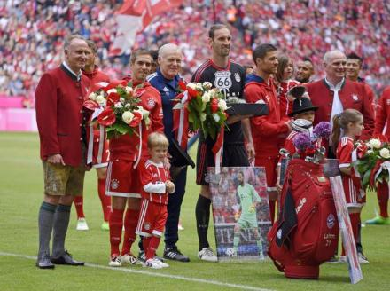
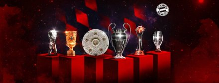

拜仁慕尼黑足球俱乐部
球队简介
拜仁慕尼黑足球俱乐部注册协会是一家位于德国巴伐利亚州首府慕尼黑市的综合体育运动协会，成立于1900年2月27日，旗下最著名的是拜仁慕尼黑足球俱乐部（Fußball-Club Bayern München，简称“拜仁慕尼黑”或“拜仁”）。
1932年拜仁赢得了队史首次德国全国联赛冠军；1963年因德国足协不允许同城市有两队参加德甲，球队遗憾地未能成为德甲创始成员。拜仁男队获得过30次德甲冠军和20次德国杯冠军，先后11次杀入欧冠决赛并6次捧得大耳朵杯，获得过1次欧洲联盟杯、1次欧洲优胜者杯、2次欧洲超级杯和4次俱乐部赛事世界冠军，为继巴萨之后第二支“六冠王”球队。拜仁女队成立于1970年，获得过3次德国顶级联赛冠军和1次德国杯冠军。
拜仁队徽由红白蓝三色组成，其中核心的蓝白格子源自于巴伐利亚州旗的颜色及样式；球队主场球衣主色调为红色及白色偶有蓝色。2005年拜仁告别了使用长达33年的慕尼黑奥林匹克体育场，入驻安联竞技场。截至2019年11月，拜仁慕尼黑足球俱乐部注册协会拥有近30万名官方正式会员，是世界上拥有会员数量最多的球迷协会。
球队历史
1900-1945
拜仁慕尼黑在成立之前曾是慕尼黑1879男子体操俱乐部的足球部门，足球部11名球员因不满高层否决他们加入德国足协的请求于1900年2月27日晚上在弗朗茨·约翰的带领下创立了拜仁慕尼黑足球俱乐部。在接下来的短短几个月，拜仁慕尼黑就以大比分战胜多个同城竞争对手，一举杀入了1900/01赛季的南德足球锦标赛（South Germanchampionship）的半决赛。

在接下来的几年中，拜仁获得了多个当地联赛的冠军奖杯，并于1910/11赛季加入了当地新创建的联赛——“Kreisliga”，这也是巴伐利亚的第一个地区级联赛。拜仁获得了联赛创办初年的冠军但遗憾未能卫冕，1914年球队再次获得了该项赛事的锦标。一战中，德国所有的足球赛事都陷入停顿。一战结束后的那几年，拜仁慕尼黑获得了几个地区级别比赛的冠军。1926年，球队夺得了历史上第一个南德冠军，两年后，他们再次取得了这一成就。
1932年，拜仁在教练理查德·科恩的带领下击败了法兰克福和谐获得队史首次全国联赛冠军。二十世纪三十年代希特勒政权的到来打乱了拜仁发展的步伐，俱乐部主席及主教练因犹太人身份而被迫离开德国。俱乐部的其他一些球员也遭到了清洗，拜仁被嘲讽为“犹太人的俱乐部”。在接下来的几年当中，拜仁无法继续参与全国冠军的竞争，在当地联赛中也仅仅排名中游。
1945-1965
二战结束以后，拜仁加入了德国足球南部高级联赛。在1945年至1963年间，拜仁虽大刀阔斧的改革解雇了多达13名教练，但球队的成绩始终未见起色。1955年，拜仁不幸从德国足球南部高级联赛降级，次赛季球队便升级归来。1956年，拜仁1-0战胜杜塞尔多夫获得了队史首个德国杯冠军。50年代末，拜仁遭遇到了严重的财政问题，濒临破产。拜仁狂热球迷企业家罗兰·恩德勒(Roland Endler)在此时出手相助，为俱乐部提供了必须的资金，作为回报恩德勒也获得了4年的俱乐部掌控权。在1963年，德国足球南部高级联赛和其他几个联赛被整合为一个新的联赛，也就是德国足球甲级联赛。一共有5支德国足球南部高级联赛的队伍加入了新组建的联赛，但其中并没有包括当时获得联赛第三的拜仁，理由是拜仁的同城死敌慕尼黑1860获得了当年的冠军，而德国足协当时只允许每个城市有一支球队加入德甲。但在2年之后，拜仁依靠年轻的天才球员弗朗茨·贝肯鲍尔、盖德·穆勒以及塞普·迈耶，成功地杀入了德甲联赛。

1965-1979
1965/66赛季是拜仁在德甲的首个赛季，球队最终获得联赛季军。该赛季拜仁还拿到了俱乐部第二座德国杯冠军奖杯，从而获得了1966/67赛季欧洲优胜者杯的参赛资格。1967年5月31日纽伦堡市政体育场，拜仁慕尼黑依靠弗朗茨·罗特在加时赛中的进球1比0力克苏格兰球队格拉斯哥流浪者足球俱乐部首夺欧洲优胜者杯冠军，这是俱乐部队史首次获得欧洲赛事冠军。1967年，拜仁成功卫冕德国杯，但球队在其他战线发挥不佳。1968年，南斯拉夫人布兰科·泽比奇接过帅印，他对纪律的要求非常严格，这为拜仁带来了良好的成绩，他在仅仅使用13名球员的情况下，带领拜仁取得了拜仁队史同时也是德国足球历史上第一个德甲和德国杯双冠王。

1970年乌多·拉特克开始执掌球队 ，拜仁顺利获得了1970/71赛季德国杯冠军。接下来的1971/72赛季拉特克带领球队收获队史第三座德甲冠军奖盘，在慕尼黑奥林匹克球场5比1大胜沙尔克04的比赛是德甲历史上首次使用直播技术。拜仁在接下来的两个赛季发挥出色实现了德甲三连冠的伟业。1973/74赛季欧洲冠军杯决赛拜仁与马竞踢平，在重赛中拜仁4比0横扫对手夺得冠军。

随后几年拜仁虽然在国内联赛中并不顺利，但在欧冠赛场上捍卫了尊严。在1975年和1976年欧冠决赛中拜仁先后击败英格兰的利兹联和法国的圣埃蒂安，成为第三支获得欧冠三连冠的球队。1976年，拜仁两回合总比分2-0战胜了巴西的克鲁塞罗首次捧得洲际杯。巅峰过后的几年，拜仁没有获得任何重要比赛的锦标，弗朗茨·贝肯鲍尔远赴纽约宇宙进行发展，塞普·迈耶和乌利·赫内斯也宣布退役。
1979-1998
20世纪80年代是拜仁慕尼黑的动荡时期，球队经历了许多人员变化以及严重财政问题。保罗·布莱特纳和卡尔·海因茨·鲁梅尼格成为了球队的灵魂，他们带领球队在1979/80赛季以及1980/81赛季的德甲联赛中捧起了冠军奖盘，拜仁在那一时期也被称为“布莱特尼格”队（FC Breitnigge）。

在此后的两个赛季，拜仁仅仅获得了1981/82赛季的德国杯。1983年，乌多·拉特克再次执教球队，布莱特纳同期宣布退役。1983/84赛季，拜仁再获德国杯冠军，并且在6年中5次夺得各项赛事锦标，更是在1985/86赛季收获联赛和德国杯的双冠王。这10年中，拜仁在欧洲赛场上并没有太多优异表现，只是在1981/82赛季和1986/87赛季获得了欧冠亚军。
1987年，尤普·海因克斯成为了拜仁的主教练。在取得1988/89赛季以及1989/90赛季的德甲两连冠后，球队成绩开始出现下滑。1990/91赛季德甲拜仁屈居亚军，1991/92赛季仅仅领先降级区5分排名德甲第10。1993/94赛季后半段，当时的主席贝肯鲍尔亲自出马，接过了拜仁的帅鞭，带领球队在沉寂四年之后重新捧起德甲冠军奖盘。
在此之后，继任的乔瓦尼·特拉帕托尼和奥托·雷哈格尔并没有像俱乐部所期待的那样，只是分别在拜仁度过了一个碌碌无为的赛季。由于当时拜仁球员通常登上八卦新闻版面而非体育新闻，俱乐部被戏称为“绿茵好莱坞”(FC Hollywood)。在1995/96赛季接近结束时，贝肯鲍尔作为代理教练暂时掌管了拜仁，随后带领球队在欧洲联盟杯决赛中击败波尔多捧得冠军奖杯。1996/97赛季，特拉帕托尼重返球队并带领拜仁捧起了该赛季的德甲冠军奖盘。但在接下来的一个赛季，拜仁在冠军争夺战中输给了雷哈格尔带领的升级马凯泽斯劳滕，特拉帕托尼也再次离开了俱乐部。

1998-2012
在1998-2004年间，奥特马·希斯菲尔德执掌拜仁帅印。在他执教的第一个赛季，拜仁获得了当年的德甲联赛冠军，欧洲冠军联赛冠军也几乎到手，只是在全场领先的情况下被曼联伤停补时阶段的两粒进球所击败。在1999/00赛季，拜仁获得了历史上第三个双冠王。

2000/01赛季德甲最后一轮，拜仁在比赛进行到90分钟被汉堡队前锋谢尔盖·巴巴雷茨攻破球门，不过好在帕特里克·安德森在补时阶段通过禁区内间接任意球进球逼平对手惊险捧得沙拉盘。不久之后，拜仁在欧冠决赛中点球击败西班牙球队瓦伦西亚，时隔25年之后重回欧洲之巅。随后拜仁又获得了2001年的丰田杯冠军，不过2001/02赛季拜仁战绩乏善可陈。2002/03赛季，拜仁获得了球队历史上的第四个双冠王，领先第二名斯图加特16分的成绩也创造了德甲联赛的历史，同年拜仁参加了西亚海湾邀请赛，在对阵替补出赛的中国冠军大连实德时拜仁3-1取胜。
希斯菲尔德的王朝在2004年终结，该年拜仁的表现令人失望，德国杯赛更是不敌德乙球队亚琛惨遭淘汰。菲利克斯·马加特接过了球队的教鞭，并带领拜仁获得了两个双冠王。在2005/06赛季开始之初，拜仁的主场由原来的慕尼黑奥林匹克体育场搬迁至了新建的安联竞技场，新球场是与同城对手慕尼黑1860足球俱乐部共同使用。拜仁在2006/07赛季上半程表现不佳，主教练马加特在冬歇期后不久便离开了帅位。2007年1月奥特马·希斯菲尔德重返球队，不过该赛季球队成绩依旧不如人意；联赛最终排名第四无缘下赛季欧冠，德国杯决赛输给亚琛无缘冠军。在2007/08赛季开始前，拜仁对球队阵容进行了大刀阔斧的改造和重建；球队一共签下了8名球员，也有多达9人被出售、解雇和外租。其中，最重要的引援是从佛罗伦萨引进卢卡·托尼、从云达不莱梅引进米罗斯拉夫·克洛泽以及从马赛引进弗兰克·里贝里。得益于这些引援，球队从联赛开始一直占据榜首位置，最终收获该赛季双冠王。
2008年1月11日，克林斯曼以希斯菲尔德继任者的身份与拜仁慕尼黑签并从2008年7月1日开始接管球队。2008/09赛季，球队德甲开局糟糕，前6轮比赛中只胜2场，后续有所改善；德国杯四分之一决赛被勒沃库森淘汰；欧冠赛场虽然总比分12-1创欧冠淘汰赛最悬殊比分纪录击败葡萄牙体育，但随后被巴塞罗那5-1淘汰出局。2009年4月27日，拜仁主场不敌沙尔克04，积分滑落到联赛第3，克林斯曼被迫下课，老帅尤普·海因克斯暂时接手球队直到赛季结束。在海因克斯的带领下，球队最终收获联赛亚军，顺利获得次赛季欧冠小组赛资格。2009年夏天，拜仁聘请了荷兰名帅范加尔执掌球队，并从皇家马德里引进了荷兰小飞侠罗本。在2009/10赛季，拜仁虽遭遇开局不佳，但仍提前一轮夺得联赛冠军。德国杯赛场拜仁再次夺冠，球队又一次获得双冠王。而在当赛季的欧冠中，拜仁先后淘汰佛罗伦萨、曼联和里昂与国际米兰会师决赛，不过遗憾输球无缘奖杯。2010/11赛季，拜仁联赛排名第三，德国杯止步四强，欧冠遭遇国际米兰再一次被淘汰出局。2011/12赛季拜仁不幸成为“三亚王”，联赛德国杯均位列多特蒙德之后，欧冠决赛在局面大好的情况下被切尔西拖入点球遗憾失利无缘冠军。

2012-2019
2012/13赛季，拜仁提前6轮夺得德甲冠军，创造了德甲50年历史中最快夺冠纪录；欧冠半决赛双杀巴塞罗那总比分7-0挺进决赛并在决赛中凭借罗本与曼朱基齐的进球战胜多特蒙德队第五次站在欧洲之巅；德国杯赛场戈麦斯6分钟上演帽子戏法6-1横扫狼堡杀入决赛并在柏林的决赛中3:2战胜斯图加特获得德国杯冠军。至此，拜仁慕尼黑就成为欧洲第七支获得“三冠王”荣誉的球队，同时也是德国第一支获得此荣誉的球队。2013年夏天，瓜迪奥拉接替老帅海因克斯执掌拜仁帅印，率队首场正式比赛不敌多特蒙德无缘德国超级杯冠军。2013年8月30日布拉格伊甸园球场，欧冠冠军拜仁慕尼黑迎来欧联冠军切尔西，拜仁两度落后两度扳平，点球大战力克对手首次夺得欧洲超级杯冠军。2013年12月21日，国际足联俱乐部世界杯决赛，拜仁慕尼黑2比0轻取东道主球队拉贾·卡萨布兰卡，获得冠军。至此，拜仁慕尼黑在2013年成为“五冠王”。

2014年3月13日，时任俱乐部监事会主席乌利·赫内斯于因逃税并处以三年半的监禁，原副主席卡尔·霍普夫纳接替他担任俱乐部主席一职。 3月25日，拜仁在客场3比1战胜柏林赫塔提前7轮卫冕联赛冠军，成为德甲51年历史上首支在三月份就捧起冠军奖盘的俱乐部。与此同时，拜仁创造了新的53场联赛跨赛季不败纪录。3月26日，2014年劳伦斯奖在吉隆坡揭晓，拜仁成功问鼎最佳团队。 [65] 5月17日，拜仁在德国杯决赛中以2比0击败多特蒙德，赢得队史第十次“双冠王”。2014/15赛季，拜仁免费签下强援罗伯特·莱万多夫斯基，并从皇马引进老将哈维·阿隆索，但同时拜仁也未能阻止托尼·克罗斯转投皇马。隔年，俱乐部的旗帜人物巴斯蒂安·施魏因斯泰格和老将克劳迪奥·皮萨罗也离开了俱乐部。这两个赛季，拜仁均成功卫冕德甲，2015/16赛季再次获得双冠王，但连续第三年倒在欧冠半决赛，瓜迪奥拉在合同到期后离开拜仁。

2016年夏天，意大利人安切洛蒂来到慕尼黑接手球队，拜仁青训球员马茨·胡梅尔斯重回拜仁。乌利·赫内斯在获释后于2016年11月再度当选俱乐部监事会主席。安切洛蒂率领拜仁提前三轮完成德甲联赛五连冠，德国杯止步半决赛，欧冠在争议中止步八强。赛季结束球队队长菲利普·拉姆、施塔克和哈维·阿隆索退役。2017年7月，拜仁官方宣布将全资拥有安联竞技场。2017-18赛季，拜仁进行了大规模换血，相继签入金斯利·科芒、科朗坦·托利索、塞尔吉·格纳布里和尼克拉斯·聚勒等年轻球员，并从皇家马德里租借了哈梅斯·罗德里格斯。赛季开局阶段安切洛蒂因带队成绩不佳下课，助理教练萨尼奥尔短暂接手球队后老帅海因克斯再度出山救火。球队在老帅带领下提前6轮卫冕德甲冠军，欧冠赛场遗憾止步四强，德国杯决赛不敌法兰克福。

2018年8月13日德国超级杯，拜仁慕尼黑在新帅科瓦奇带领下客场5-0横扫法兰克福强势夺冠。2018/19赛季，尽管拜仁在德甲联赛中一度落后多特蒙德9分，但最终还是有惊无险地以2分的微弱优势收获德甲冠军。2019年5月25日德国杯决赛在柏林奥林匹克体育场打响，莱万多夫斯基独中两元，拜仁慕尼黑3:0战胜莱比锡，第19次捧杯。
2019--
2019年8月4日，德国超级杯在伊杜纳信号公园球场展开较量，拜仁0比2负于多特蒙德，无缘冠军。2019年11月16日，海纳当选拜仁慕尼黑足球俱乐部注册协会新任主席。11月23日，拜仁官方宣布解雇主帅科瓦奇，助教教练弗里克暂时接管球队。12月10日，海纳成为拜仁慕尼黑足球俱乐部股份公司监事会主席，赫内斯担任副主席。2020年4月3日，拜仁俱乐部官宣与主教练弗里克续约至2023年。

北京时间2020年6月17日凌晨，拜仁慕尼黑客场1:0击败不莱梅，提前2轮获得本赛季德甲冠军。这是拜仁队史第29次获得德甲冠军，至此拜仁豪取德甲八连冠，追平尤文图斯上赛季创造的五大联赛连冠纪录。7月5日，拜仁在柏林奥林匹克球场4-2击败勒沃库森收获队史第20座德国杯冠军奖杯，与此同时也迎来了队史第13个国内双冠王。8月，在2019/20赛季欧冠四分之一决赛中，拜仁8:2淘汰巴萨挺进四强。 [10] 半决赛，拜仁3比0完胜里昂，成为冠军联赛历史首支单赛季前10场全胜的球队。决赛，拜仁凭借科芒的头球1-0击败法甲霸主巴黎圣日耳曼，以赛季11场全胜战绩夺冠，收获球队第六座“大耳朵杯”。 [12] 自此，拜仁此赛季先后获得了德甲、德国杯和欧冠冠军，实现队史第二次“三冠王”。北京时间2020年9月25日凌晨，2020年欧洲超级杯在匈牙利首都布达佩斯进行，“三冠王”拜仁慕尼黑通过加时赛2:1战胜欧联冠军塞维利亚顺利捧杯。10月1日，拜仁慕尼黑3-2战胜多特蒙德，获得德国超级杯冠军。2021年2月12日，拜仁慕尼黑1:0战胜新莱昂自治大学老虎获得2020年国际足联俱乐部世界杯冠军，成为继巴塞罗那之后第二支在单一自然年内夺得六项主要赛事冠军的俱乐部。
北京时间2021年1月14日，在德国杯第2轮中，拜仁客场对阵德乙球队荷尔斯泰因基尔；比赛中拜仁两度领先但都被追平；120分钟结束后双方难分伯仲，点球大战拜仁不敌对手爆冷出局。4月8日凌晨，欧冠1/4决赛，拜仁慕尼黑主场迎战巴黎圣日耳曼；巴黎圣日耳曼一度2-0领先，拜仁顽强扳成2-2平；不过姆巴佩的关键进球帮助巴黎3-2赢球。4月14日凌晨，欧冠1/4决赛次回合打响，拜仁慕尼黑虽客场1-0小胜巴黎圣日耳曼，但仍以客场进球劣势出局。5月7日，拜仁慕尼黑俱乐部获得2021年劳伦斯世界体育奖最佳团队荣誉。 [63] 5月8日，拜仁慕尼黑提前两轮取得了德甲九连冠的伟业，这不仅刷新了由他们自己保持的德甲纪录，同时也追平了尤文图斯保持的欧洲五大联赛最长的连冠纪录。 5月23日，2020/21赛季德甲收官战拜仁主场5-2战胜奥格斯堡，莱万多夫斯基攻入个人本赛季德甲的第41粒进球，刷新了盖德·穆勒尘封49年的德甲单赛季进球纪录。拜仁主教练弗里克宣布赛季后于拜仁解约。21-22赛季莱格尔斯曼将成为拜仁主教练